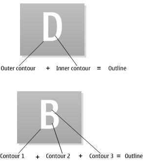

Font and Text Services Collection Overview
A font is a complete character set of matching size (height) and appearance. In order to be displayed each character must ultimately be drawn as a series of pixels (a bitmap). Fonts can be stored in a bitmap or vector form. A vector font such as OpenType and TrueType must be converted to bitmaps (or rasterized) before it can be drawn. Bitmaps are cached for performance and memory efficiency.
Concepts and terms
- Points, twips and pixels
Points (1/72th inch) and twips (a twentieth of a point) are absolute measurements of distance and specify device-independent size. Pixel sizes are only relevant for a specific graphics device. Each graphics device (screen or printer) must provide a mechanism for converting between pixels and twips.
- Character
A single element (such as a letter, number, ligature, symbol or punctuation mark) of written language. Each character has a unique number (its Unicode code point).
- Font
A named set of characters of matching size (height) and font style (normal, bold, italic, underline). Times Roman 14 point bold is an example of a font.
- Typeface
A group of fonts with similar appearance. The typeface does not include the size or font style. Times is an example of a typeface. Typefaces are sometimes referred to as font families.
Typefaces are grouped generically as mono-spaced, variable width, serif, sans-serif and symbol. This allows the grouping of typefaces that have similar characteristics, so that an alternative font can be selected when an exact match is not found. This means that applications can display text relatively accurately when a specific font is not available.
- OpenType font
A font that is stored as vector data, which can be rasterized to any pixel size. OpenType fonts are sometimes simply called open fonts. An open font can only be used with a corresponding font rasterizer. The Font and Bitmap Server uses the Font Store to cache rasterized fonts into bitmap form.
OpenType is an open source vector font format, which extends TrueType. Like TrueType fonts, OpenType fonts can contain font hinting information. However the font rasterizer's use of the font hinting information in OpenType fonts is restricted by a software patent.
- Bitmap font
A font stored as bitmap glyphs. The size of a font is described in pixels. However, the actual size is dependent on the pixel size of the graphics device.
- Rasterizing
The process of converting drawing instructions into bitmap data. Fonts provided in vector form (OpenType fonts) must be rasterized into fixed size fonts before they can be used.
- Glyph and glyph ID
A graphical representation of a character in a specific font. The mapping between a character and a glyph is not always direct. For example, a character may be represented by different glyphs, depending on the context. In each font file, every glyph has an unique ID, which is called glyph ID.
- Contour, outline and glyph outline data
A contour is a set of lines and curves that define the border of a glyph. A glyph outline is made up of all contours. Special points are selected and their coordinate values are saved in a font file as glyph outline data. At run time, each contour is calculated against the device based on these points. Vector fonts such as open fonts use this mechanism to ensure good quality when the fonts are scaled.
- Font metrics
Measurements (such as maximum height) that are common to all of the characters in a font.
- Character metrics
Measurements (such as character width) that apply to an individual character within a font.
- Linked font
A virtual font or typeface created from characters from other fonts. The component fonts must be open fonts or other linked fonts. Linked fonts are typically used where a preferred font does not contain all of the characters in the character set. One of the typefaces in a linked font must be designated as the principal typeface from which any unspecified default metrics or characters are used.
- Contextual shaping
In some scripts some characters are drawn differently depending on the adjacent characters. This means that different glyphs are used to represent a particular character in different contexts. Contextual shaping is the selection of the appropriate glyph from several glyphs that represent a particular character depending on the context.
In Latin scripts, contextual shaping is normally used only when simulating handwriting. For example, the glyph used for the letter p might depend on whether the letter is at the start, middle or end of a word, as shown in the following diagram. For example, when it is in the middle of the word, it might have a "tail" on both sides to join it to the letters that appear before and after.

Figure: Figure 1: Handwriting simulation might use different glyphs for the letter p depending on its position in a word
Contextual shaping is an essential feature of some scripts, including Arabic and many Indian and East Asian scripts, such as Devanagari, Kannada, Telugu, Tamil, Bengali, Malayalam and Gurmukhi. For this reason, support for contextual shaping is sometimes referred to as Brahmic support.
- Text shaper
A plug-in of the Font Store and performs the contextual shaping for scripts that require this feature. Text shapers are font and language specific.
- System font
A default font that is used when no font is specified.
Architecture
The Font and Text Services components are closely integrated with the Font and Bitmap Server (FBS) and Graphics Device Interface (GDI) of the Graphics package. In general, GDI provides abstract APIs, based on which the FBS provides client-side APIs and the Font Store provides server-side APIs.
The following diagram shows the component architecture. The FBS forwards client requests to the Font Store, which runs inside the FBS's shared heap. Text shapers and font rasterizers are ECOM plug-ins of the Font Store.
Figure: Font and text services component architecture
The following diagram shows the run-time architectural relationship of the components and APIs. The text following the diagram is a summary of the functionality. For more detailed information, refer to the Font Store typical uses.
Figure: Font and text services run-time architecture
Client applications access font services through the FBS, which caches the bitmaps of rasterized vector fonts in a shared heap. However, the eXecute In Place (XIP) ROM-based bitmap fonts are not copied into the heap.
The FBS provides two main client-side
classes for fonts–CFbsFont and CFbsTypefaceStore, which are derived from abstract classes of the GDI component. Use
of the FBS is transparent to FBS clients. For example, Window Server
clients, which are also FBS clients, perform no explicit session management.
The Window Server client session (RWsSession)
automatically creates an RFbsSession and stores
it in thread local storage (TLS). The FBS client-side classes find
and use the RFbsSession in TLS automatically.
The Font Store contains all the fonts on the device and manages the font rasterizers and text shapers required to render these fonts. The Font Store classes are created and destroyed by the FBS. These classes are stored in the shared heap so that they can be accessed (read-only to clients) by both client and FBS processes. In general, the FBS forwards client requests to the Font Store to load font files, retrieve the requested font or load the font rasterizer to rasterize characters.
Open font rasterizers are implemented as ECOM
plug-ins. An open font file (represented by and derived from COpenFontFile) can contain one or more open fonts in the
proprietary vector format. A corresponding font rasterizer plug-in
(derived from COpenFontRasterizer) must convert
the vector data into bitmaps that the FBS can cache and access using
the CBitmapFont and COpenFont APIs. Client applications use rasterized open fonts through CFbsFont.
Text shapers (CShaper) are implemented as ECOM plug-ins. They are used for contextual scripts, which require their glyphs to be modified according to the adjacent characters. Text shapers are font and language specific.
Components
The Font and Text Services collection includes the following components:
Font Store. This manages font matching, ownership and rasterizing. This component also provides the font rasterizer and text shaper APIs for device creators to create additional plug-ins.
FreeType Font Rasterizer. This open source plug-in is a reference open font rasterizer implementation. This rasterizer is normally loaded by default. More information about FreeType can be found at www.freetype.org.
ICU Layout Engine Component. This is a text shaper plug-in that performs contextual shaping for specific scripts. When a function, such as
CFbsBitGc::DrawText()draws text in one of these scripts, internally a text shaper is used to convert the string of characters into the appropriate series of glyphs.
Using Font and Text Services
Application developers can use Font and Text Services for selecting fonts to display text based on various criteria, such as size and typeface.
Device creators can create font rasterizers and text shaper plug-ins. Fonts files can be included in the ROM or installed on user drives.